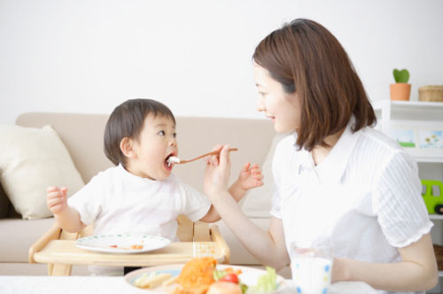
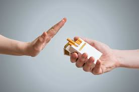

Thức ăn nhiều chất dinh dưỡng

Các loại thịt như thịt bò hoặc thịt gà cung cấp cho bé nhiều protein, sắt và kẽm – những chất dinh dưỡng hết sức cần thiết cho trẻ trong quá trình tạo máu và nuôi sống tế bào cơ thể. Ngoài ra, các loại sữa cũng cung cấp một phần đạm cho bé. Nếu các bạn đang băn khoăn về câu hỏi phải chọn loại sữa nào giúp bé tăng cân, hãy lựa chọn sản phẩm đến từ các thương hiệu có danh tiếng và uy tín như NutiFood để đảm bảo an toàn cho trẻ. Các loại rau quả có màu xanh thẫm: các loại rau như rau chân vịt, cải xoăn hoặc bông cải xanh cung cấp cho trẻ đầy đủ các axit folic và chất xơ. Các loại rau này nên được cắt nhỏ và hấp chín cho trẻ ăn kèm với các loại cháo ăn dặm. Các loại dầu từ thiên nhiên như dầu olive, dầu cá,… và quả bơ là nguồn cung cấp chất béo an toàn cho bé. Các loại dầu này có thể cho trực tiếp vào cháo hoặc các loại thức ăn khác của bé để tăng thêm hương vị cho món ăn. Quả bơ nghiền nhỏ để bé ăn như một loại sinh tố hấp dẫn vừa cung cấp chất béo không bão hòa vừa phát triển trí não cho bé. Bí ngô và cam cũng là những loại thức ăn rất bổ dưỡng cho bé. Nó cung cấp rất nhiều vitamin A và C cho cơ thể bé, tăng sức đề kháng cho cơ thể. Bí ngô nghiền nhuyễn là một loại thức ăn dặm hoàn hảo cho bé trong khị vị chua ngọt của cam góp phần kích thích vị giác.Trứng gà chứa nhiều protein, DHA, lecithin giúp trí não bé được phát triển toàn diện, choline tăng cường trí nhớ. Quả việt quất bổ mắt, cung cấp các dưỡng chất phát triển não bộ. Các bạn có thể lựa chọn quả việt quất được nhập khẩu từ nước ngoài hoặc việt quất từ Đà Lạt cũng có chất lượng và hiệu quả tương tự.
Làm thế nào để bỏ thuốc lá

Hút thuốc nói chung (bao gồm thuốc lá, thuốc lào, thuốc điện tử) đều mang đến những hệ lụy nguy hiểm như nhau đối với sức khỏe. Đặc biệt, ngay cả khi dừng hút thuốc, tác hại của thuốc lá đối với cơ thể vẫn còn tồn tại tới 10-15 năm. “Khi bỏ thuốc, trong vòng tuần đầu tiên hoặc tháng đầu tiên, các dấu hiệu về tim mạch sẽ giảm nhanh nhưng dấu hiệu về ung thư vẫn còn. Nguyên nhân là hắc ín không thể loại bỏ ra khỏi cơ thể", TS Chân cho hay. Hắc ín chính là sự lắng lại của khói thuốc với hàng nghìn chất hóa học và phụ gia với đặc điểm dính và nhầy như nhựa. Khi khói thuốc được hít vào phổi, các chất nhựa lắng đọng và bám vào các khoang chứa khí của phổi, gây ra bệnh ung thư và các bệnh về phổi. Để đào thải các chất này ra khỏi cơ thể cần phải có thời gian. TS Chân đã gặp nhiều trường hợp mắc bệnh dù đã bỏ thuốc hơn chục năm.
(1) Nghiện tâm lý: bắt đầu có những quan điểm lệch lạc về thuốc lá, như nhận định thuốc lá là một biểu tượng của sự “trưởng thành”, “nam tính”, “sành điệu”… (2) Nghiện hành vi: hút thuốc lá trở nên một thói quen, một phản xạ có điều kiện được củng cố bằng hình thức lập đi lập lại qua nhiều năm tháng, ví dụ hút thuốc khi uống cà phê, sau bữa ăn, khi gặp gỡ bạn bè, khi viết lách, làm việc căng thẳng…lâu dần thành thói quen khó bỏ. (3) Nghiện thực thể khi chất nicotine đã có tác động lên quá trình hoạt động của hệ thống thần kinh khiến người hút thuốc lá có cảm giác hưng phấn, giảm lo lắng, tăng khả năng tập trung, và khi cai bỏ thuốc lá, người nghiện hút thuốc lá cảm thấy buồn bã, lo lắng, bứt rứt, mất ngủ, khó tập trung, vật vã vì hệ thần kinh của họ đã quen với sự hiện diện của nicotine trong máu. Đây là hội chứng cai thuốc lá, nguyên nhân hàng đầu khiến việc cai nghiện thất bại.